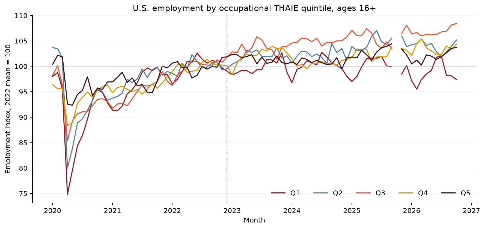
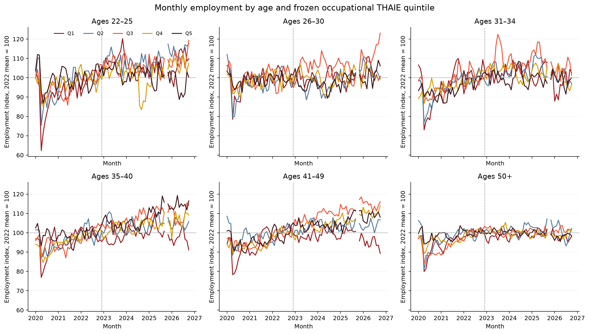
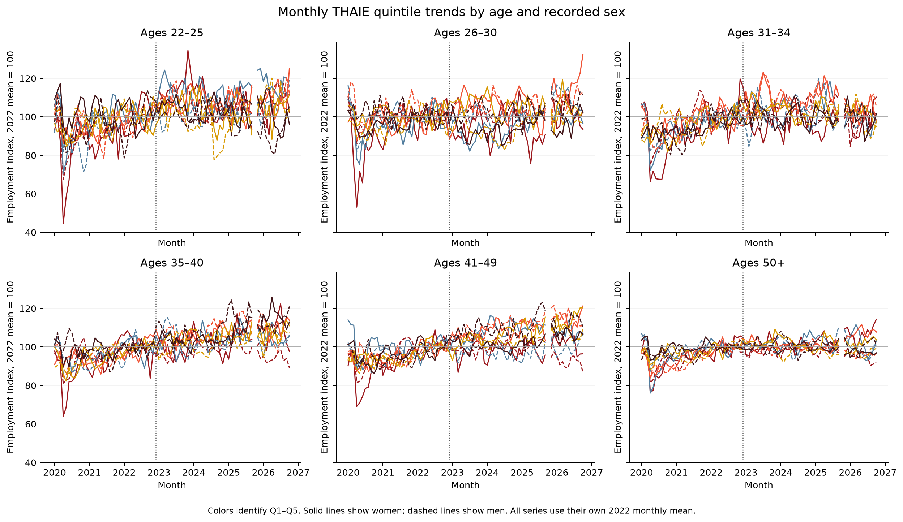
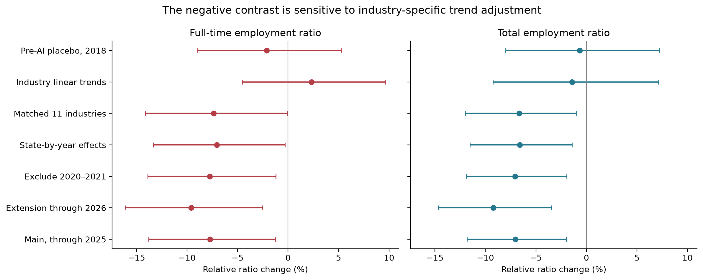
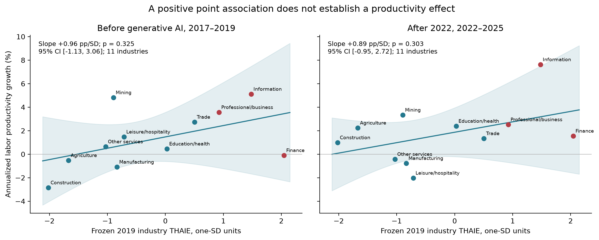

Introduction
Generative AI could change both the number of entry opportunities and the quality of jobs offered. Employment stocks alone cannot distinguish reduced hiring from separations, aging, occupational reallocation, or individual moves into part-time and contingent arrangements. This study combines those outcomes only where their data and denominators support comparison.
We independently reconstruct monthly employment from official Basic Monthly CPS microdata and assign occupations using our own THAIE methodology. Published payroll indices are not analysis inputs, calibration targets, or substitutes for CPS observations.
Related evidence and alternative explanations
Canaries in the Coal Mine documents exposed early-career employment weakness. Generative AI at Work demonstrates productivity gains in a specific firm setting. Adoption studies and broader labor-market assessments do not uniformly find displacement. Pre-existing trends, pandemic recovery, remote work, monetary conditions, and firm selection remain competing explanations.
Full verified literature review · Literature matrix · Bibliography. Version-specific verification limits remain in the evidence register.
Methods
Population and age groups. CPS estimates use employed civilian noninstitutional people aged 16 and older in all 50 states and DC. The six focal groups are 22–25, 26–30, 31–34, 35–40, 41–49, and 50+. The all-worker series also includes ages 16–21. Employed people include those at work and those temporarily absent. Composite final weights produce employment counts, not employment-to-population rates. Full-time and part-time use the established CPS labor-force classification. Recorded sex is reported as women and men; it is not a measure of gender identity.
Exposure. The primary analysis uses our THAIE occupational quintiles, frozen using the existing 2019 employment-based classification. Quintiles are not recalculated within age, sex, or employment-status groups. Scores are retrospective task-based measures, not observed AI adoption. Unmapped occupations remain unassigned, rather than being placed in Q1–Q4.
Coverage and support. Descriptive CPS curves span January 2020–October 2026, with 81 available months. The analysis extends the monthly pre-period to January 2017. October 2025 remains missing. Curves are not seasonally adjusted or smoothed. Displayed cells require at least 30 employed observations and at least 120 person-month observations in the 2022 baseline. The regressions use supported aggregate cells including zero counts and do not select cells based on statistical significance. Sampling uncertainty, rotation overlap, population controls, and occupational crosswalks remain relevant.
Within-occupation comparisons. Software developers are Census occupation 1021, corresponding to SOC 15-1252, and belong to THAIE Q4 in our mapping. A fixed occupation-level score cannot identify five exposure strata within a single occupation. We show age-specific trends for the fixed occupation and compare THAIE groups within the broader computer and mathematical family where detailed occupations differ.
DID, event studies, and individual transitions
Earlier annual analyses use common January–September observations and a post period beginning in 2023. They differ from these new complete-calendar monthly curves. Regional employment-rate models, occupational count contrasts, and national-industry age-ratio models estimate different quantities and are not combined into one effect. Exposure is potential task susceptibility, not an observed firm adoption date.
The latest industry model compares ages 22–25 with ages 40+, using 13 broad industries, three in Q5, with 2019 exposure frozen. Industry and year effects and exposure-specific 2020/2021 interactions form the main model. State-by-year effects, industry trends, placebo periods, long pretrends, leave-one-industry-out estimates, and small-cluster wild-score checks are reported in the audit. Linked CPS uses attrition-adjusted short-run observations; SIPP provides longer individual histories. Neither currently establishes an AI-induced full-time-to-part-time or permanent-to-contract transition.
Results
Open a result below. The monthly explorer uses only our CPS reconstruction and THAIE classification, with all six age groups, occupation selection, and separate recorded-sex panels. Descriptive curves are not causal estimates.
Monthly employment indices by exposure, age, occupation, and sex
All-worker exposure comparison
Exposure comparison within a fixed age group
Age comparison within a fixed occupation
Exposure within the broader occupational family
Exposure and sex within the selected age group
These two panels cover all exposure-mapped occupations, not only the occupation selected above. Women and men share the same vertical scale and use their own 2022 baselines.
Hover over a point or focus it with the keyboard to inspect the index. Gaps are not zero employment. Software-developer age-by-sex cells are often too small for monthly display. No external payroll data are loaded.
All six age groups and downloadable scientific figures







DID and event-study evidence, with robustness and uncertainty
| Estimand | Estimate | Interpretation |
|---|---|---|
| Regional THAIE, ages 22–25, full-time employment / population | −1.81 pp [−4.35, +0.72] | Inconclusive regional estimate; the interval includes zero. |
| Industry-Q5 young/40+ full-time employment ratio, through 2025 | −7.73% [−13.79, −1.24] | Conventional p=.024; small-cluster wild-score p=.062. |
| Same industry ratio, through January–September 2026 | −9.58% [−16.13, −2.51] | Conventional p=.013; small-cluster wild-score p=.048. |
| Industry-specific linear trends, through 2025 | +2.31% [−4.55, +9.67] | Trend adjustment removes conventional significance. |
The high-industry group consists of information, finance, and professional/business services. It is distinct from occupational Q5. During 2022–2026, young full-time employment in these industries rose about 0.51%, while employment among ages 40+ rose 4.67%. A falling age ratio is not an absolute collapse in young employment.


Short and long binned pretrend tests do not reject in the latest industry age-ratio analysis, but this does not validate parallel trends. Earlier occupational-Q5 age contrasts remain exploratory and weaken under broader retrospective multiplicity correction. The audit reports all variants rather than selecting significant results.
Full methods, event studies, multiplicity audit, and revised interpretation · Industry age-ratio estimates · Archived annual DID and event-study figures
Job quality, worker transitions, and hiring opportunities
Full-time and part-time counts describe hours categories, not contract permanence. Involuntary part-time status, realized earnings, and actual individual transitions are separate outcomes. The current regional job-quality estimates and attrition-adjusted youth transition contrasts do not establish AI-induced downgrading. SIPP offers longer histories but the high-exposure young sample is small. An absent significant transition is not proof that adjustment never occurs.
Archived job postings supply selected employer snapshots rather than a complete representative hiring panel. Missing archives are not zero vacancies. Posted pay is not realized pay, salary disclosure can respond to transparency laws, and few employers cannot support broad causal claims about hiring or job quality.
Linked-CPS and SIPP methods and results · Prior job-quality results · New monthly occupation-cell support audit
Productivity and the proposed employment tradeoff
Across 11 matched industries, one SD of frozen THAIE is associated with +0.89 percentage points of annualized labor-productivity growth during 2022–2025, with a 95% interval of −0.95 to +2.72 and p=.303. The positive coefficient is not statistically established. The post-2022 growth-acceleration panel is also inconclusive. Normalized productivity index levels do not measure comparable absolute industry productivity.


The available data do not establish that AI productivity gains caused weaker youth employment. The exploratory joint directional test has p=.152. BLS private-business productivity coverage also differs from CPS all-worker employment coverage.
Discussion
What can be maintained. The evidence is consistent with uneven early-career employment performance across exposed fields. The new monthly explorer shows where patterns agree or differ across age, exposure definitions, occupations, and data sources. The industry young/older ratio contrast is directionally stable across several checks, but sensitive to industry trends and small-cluster inference.
What remains unproven. These results do not establish AI-caused job destruction, a hiring mechanism, a permanent-to-contract transition, an individual full-time-to-part-time pathway, a causal sex disparity, or a productivity-versus-employment welfare tradeoff. Descriptive subgroup curves are not formal tests of subgroup differences. No new monthly DID is inferred from the graphs.
Policy implications. Monitor entry hiring, retention, hours, training, and benefits together. Evaluate paid entry pathways and worker adaptation prospectively. A stronger design needs actual employer AI adoption, complete posting denominators, linked hires and separations, origin-job exposure, and comparable output and hours. The current estimates do not justify a quantified aggregate loss or benefit.
Long pre-periods, pandemic and industrial shocks, seasonality, changing population controls, survey nonresponse, occupational mix, and measurement error require continued examination. See Roth on pretesting and Rambachan and Roth on deviations from parallel trends. The trend sensitivity here is not a formal HonestDiD analysis.
Data and code
New monthly data
All inputs were obtained through free public sources. Existing detailed materials are retained in the archive, while overlapping narratives have been condensed on this page. No person-level CPS or SIPP records are published.